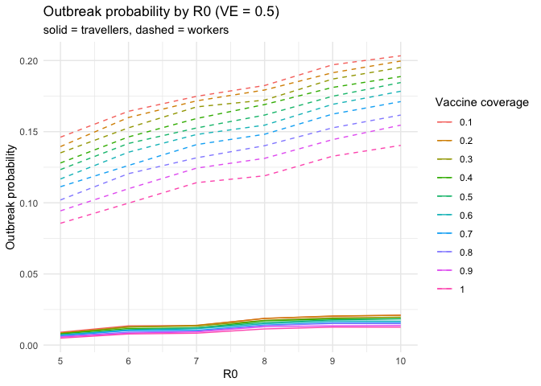

quarantinesim provides a ready-to-use dataset of quarantine outbreak scenarios that can be explored through both R and a built-in Shiny app.
The dataset has already been merged and cleaned, and each row represents a simulated epidemiological scenario defined by:
-
R0 : basic reproduction number
-
VE : vaccine effectiveness
- coverage : vaccination coverage proportion
It also includes modelled outputs such as:
-
traveller_ob_prob: outbreak probability from travellers
-
worker_ob_prob: outbreak probability from quarantine workers
-
chance50: time or iteration when outbreak probability reaches 50%
-
chance95: time or iteration when outbreak probability reaches 95%
The package is designed for exploratory data analysis and visualisation, and it includes a Shiny app that allows users to interactively explore how outbreak risk changes with coverage, R0, and VE, and to switch between different outcomes (probabilities and time-to-outbreak).
Installation
You can install the development version of quarantinesim from GitHub with:
# install.packages("pak")
pak::pak("ETC5523-2025/assignment-4-packages-and-shiny-apps-Melisa-ops")Or, if you are working locally inside the package project:
install.packages("devtools") # if not installed yet
devtools::install()Then load the package:
The app lets you:
- select a vaccine coverage,
- choose which outcome to display (traveller, worker, chance50, chance95),
- and switch chart type (line, point, bar), while also viewing the filtered data in a separate tab.
Example
library(quarantinesim)
# load dataset shipped with the package
data("data_quarantine")
# see sample of data
head(data_quarantine)
#> key R0 VE coverage traveller_ob_prob worker_ob_prob chance50
#> 1 5_0.5_0.1 5 0.5 0.1 0.00903 0.14613 46.27000
#> 2 6_0.5_0.1 6 0.5 0.1 0.01352 0.16433 29.48333
#> 3 7_0.5_0.1 7 0.5 0.1 0.01370 0.17484 25.76167
#> 4 8_0.5_0.1 8 0.5 0.1 0.01881 0.18244 20.28667
#> 5 9_0.5_0.1 9 0.5 0.1 0.02028 0.19702 15.72000
#> 6 10_0.5_0.1 10 0.5 0.1 0.02102 0.20334 15.06333
#> chance95
#> 1 198.82600
#> 2 128.46667
#> 3 108.34800
#> 4 87.98933
#> 5 68.72667
#> 6 64.61433
# outbreak probability by R0 for VE =0.5
data_quarantine |>
dplyr::filter(VE == 0.5) |>
ggplot2::ggplot(ggplot2::aes(x = R0)) +
ggplot2::geom_line(ggplot2::aes(y = traveller_ob_prob, colour = factor(coverage))) +
ggplot2::geom_line(
ggplot2::aes(y = worker_ob_prob, colour = factor(coverage)),
linetype = "dashed"
) +
ggplot2::labs(
y = "Outbreak probability",
colour = "Vaccine coverage",
title = "Outbreak probability by R0 (VE = 0.5)",
subtitle = "solid = travellers, dashed = workers"
) +
ggplot2::theme_minimal()
Launch the Shiny app
To explore the data interactively, run:
(Make sure you have inst/app/app.R and an exported run_quarantinesim() function in R/.)
Overview of components
- data_quarantine : final dataset containing merged outbreak scenarios
- run_quarantinesim() : launches the interactive Shiny app
- Shiny app in inst/app/ : UI to explore outbreak probabilities across R0, VE, and coverage
- Package documentation : created with roxygen2 for data and functions